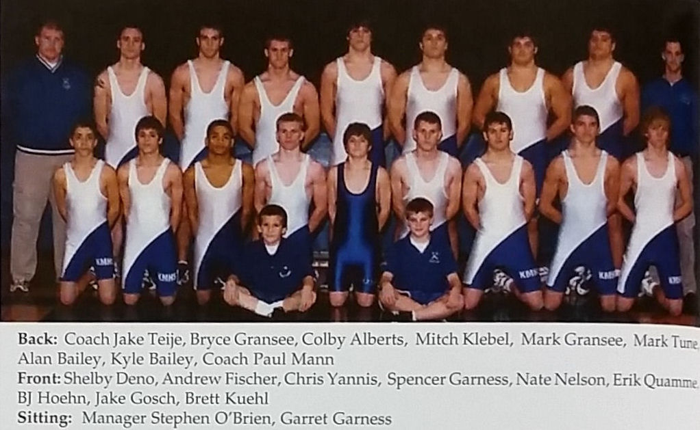

Season
2004-05
20-6Dual record
25Wrestlers
2State champions
Paul MannHead coach

Roster
| Wt | Wrestler | Grade | Record | State |
|---|---|---|---|---|
| Nov. | 31st Zumbrota-Mazzapa | W | 24-36 | |
| Dec. | 2nd Pine Island | L | 38-27 | |
| Dec. | 17th Byron | W | 56-3 | |
| Dec. | 21st Lake City | W | 47-9 | |
| Jan. | 4th Hayfield | W | 75-3 | |
| Jan. | 6th Wabasha-Kellogg | W | 51-21 | |
| Jan. | 6th Kenyon-Wanamingo | W | 50-24 | |
| Jan. | 11th GMLOK | L | 28-37 | |
| Jan. | 13th Stewartville | W | 37-28 | |
| Jan. | 20th Cannon Falls | W | 37-30 | |
| Jan. | 27th Triton | W | 75-3 | |
| Feb. | 10th Bryon | W | 52-19 | |
| Feb. | 12th Caledonia/SG/H | W | 35-25 | |
| Feb. | 12th Cannon Falls | W | 37-30 | |
| 103# | Shelby Deno | 8th | 7-5 | |
| 119# | Andrew Fisher | 9th | 6-5 | |
| 125# | Spencer Garness | 10th | 31-5 | Section 1st |
| 130# | B.J. Hoehn | 12th | 21-9 | |
| 145# | Brett Kuehl | 10th | 21-9 | |
| 152# | Colby Alberts State champ | 12th | 31-2 | 1st at state |
| 160# | Mitch Klebel | 12th | 26-6 | |
| 215# | Alan Bailey | 12th | 33-2 | 5th at state |
| 285# | Kyle Bailey State champ | 12th | 28-1 | 1st at state |
| 119# | Chris Yannis | 6-7 | ||
| 189# | Mark Tune | 12th | 9-4 |
Team Results
20-6 - Click to expand
- Nov. 31stZumbrota-MazzapaW24-36
- Dec. 2ndPine IslandL38-27
- Como ParkW64-6
- Apple ValleyL9-54
- Spring Lake ParkW40-32
- AustinW59-13
- CaledoniaW39-18
- PlainviewW59-8
- Dec. 17thByronW56-3
- Dec. 21stLake CityW47-9
- Jan. 4thHayfieldW75-3
- Jan. 6thWabasha-KelloggW51-21
- Jan. 6thKenyon-WanamingoW50-24
- LakevilleW39-30
- Osage, IAW32-29
- Scott WestL18-52
- ChatfieldW43-27
- Jan. 11thGMLOKL28-37
- Jan. 13thStewartvilleW37-28
- Jan. 20thCannon FallsW37-30
- Jan. 27thTritonW75-3
- Feb. 10thBryonW52-19
- Feb. 12thCaledonia/SG/HW35-25
- Feb. 12thCannon FallsW37-30
- PerhamL28-33
- Milaca/Faith ChristianL28-49
Head coachPaul Mann
AssistantKevin Berge